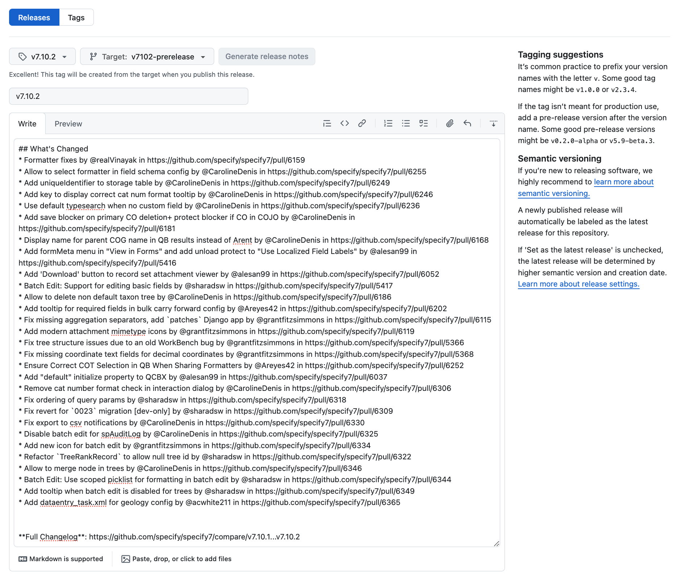
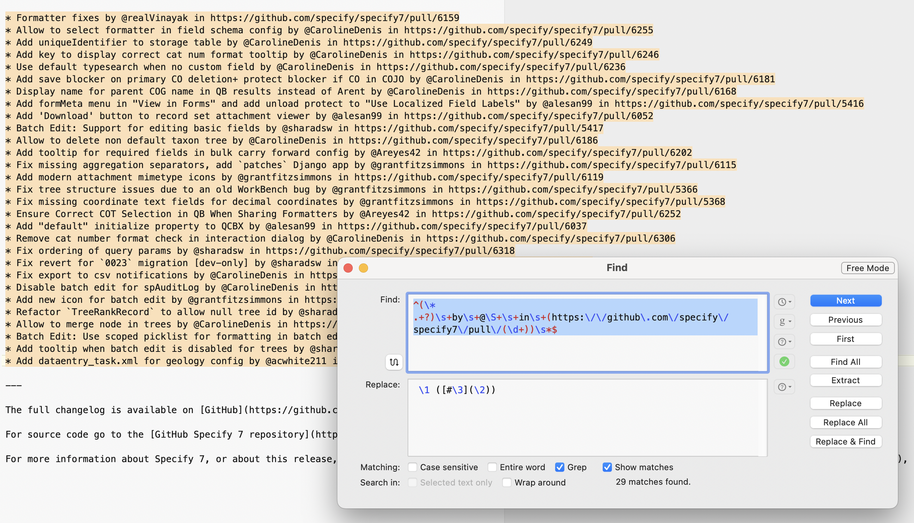
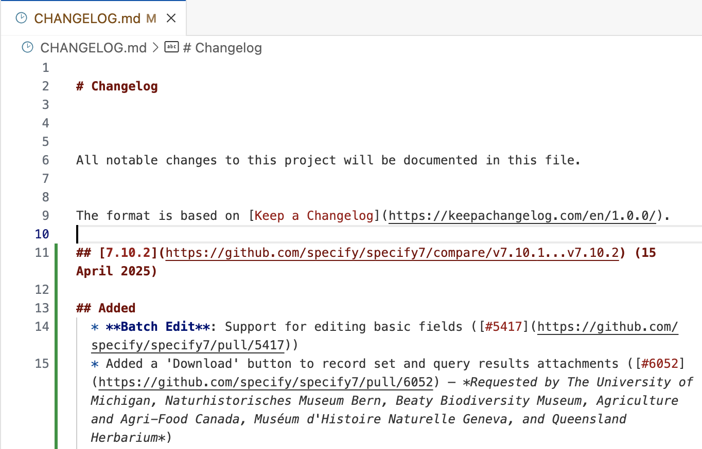
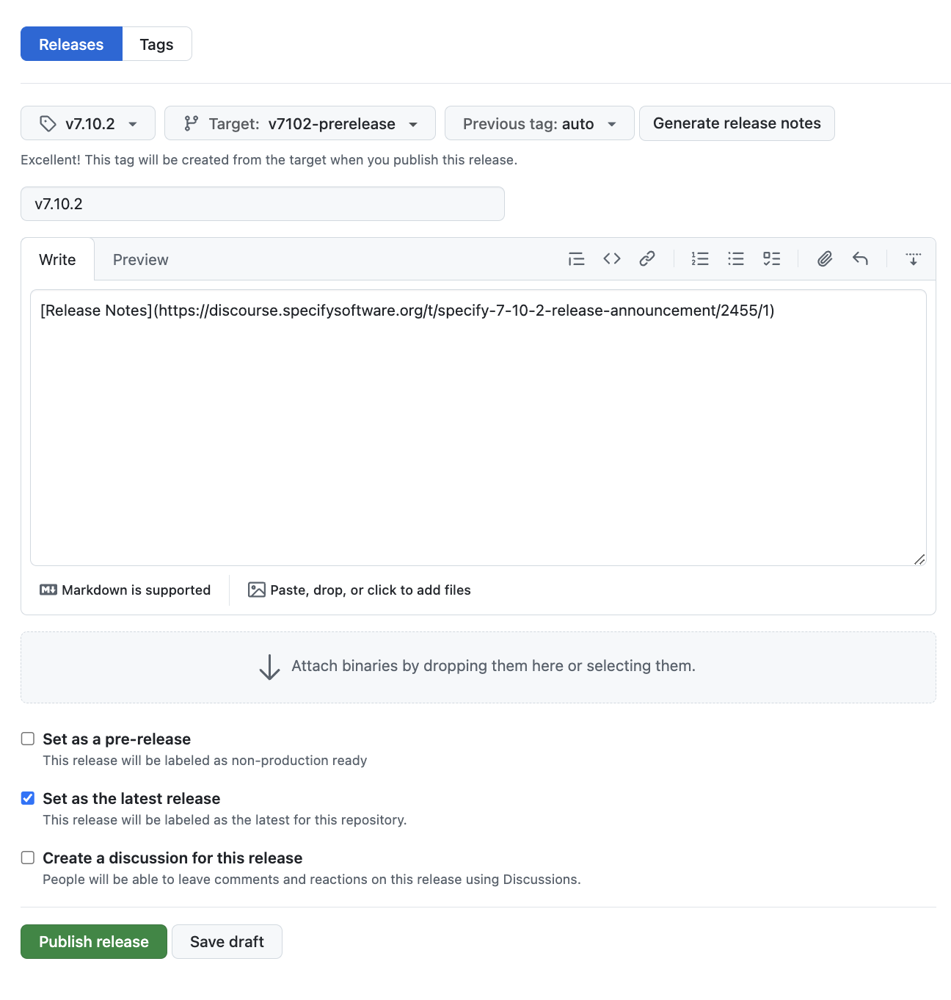

Create Release Notes
This guide walks through how to write release notes for Specify updates.
These release notes are always packaged in Markdown format. If you are not familiar, please learn more about the syntax! This is the same syntax used for text editing on GitHub.
Draft a new release based on the
mainbranch or any target branch used for an upcoming release. This can be done on the https://github.com/specify/specify7/releases page on GitHub if you have the appropriate access in thespecify7repository.Use the “Generate Release Notes” button next to the tag and target options.

Copy and paste the contents of the auto-generated release notes into a text editor with regex support. I recommend BBEdit (on Mac) or Sublime Text (on any system).
Use the following “find” and “replace” strings, enabling
greporregexin your replacement settings.This reorders the string, removes authorship credit, and simplifies the link to the PR if a user would like to learn more.
Find:
^(\* .+?)\s+by\s+@\S+\s+in\s+(https:\/\/github\.com\/specify\/specify7\/pull\/(\d+))\s*$
Replace:
\1 ([#\3](\2))\n

Replace the strings, noting that now the strings have been transformed into the format we use for release notes:
* Batch Edit: Support for editing basic fields by @sharadsw in https://github.com/specify/specify7/pull/5417`
is now
* Batch Edit: Support for editing basic fields ((#5417)[https://github.com/specify/specify7/pull/5417])
Create a new Markdown document using VSCode, StackEdit, or a text editor of your choice with real-time Markdown preview. Copy and paste this basic structure into it:
## [7.10.2](https://github.com/specify/specify7/compare/v7.10.1...v7.10.2) (15 April 2025) ### Added ### Changed ### Fixed --- The full changelog is available on [GitHub](https://github.com/specify/specify7/blob/main/CHANGELOG.md) For source code go to the [GitHub Specify 7 repository](http://github.com/specify/specify7/) For more information about Specify 7, or about this release, see [Specify 7 | Specify Collections Consortium](https://www.specifysoftware.org/products/specify-7/), or email [support@specifysoftware.org](mailto:support@specifysoftware.org).
Add the bullet list of changes you transformed using regex earlier into the newly created document from Step 4.
## [7.10.2](https://github.com/specify/specify7/compare/v7.10.1...v7.10.2) (15 April 2025) ### Added ### Changed ### Fixed * Formatter fixes ([#6159](https://github.com/specify/specify7/pull/6159)) * Allow to select formatter in field schema config ([#6255](https://github.com/specify/specify7/pull/6255)) * Add uniqueIdentifier to storage table ([#6249](https://github.com/specify/specify7/pull/6249)) * Add key to display correct cat num format tooltip ([#6246](https://github.com/specify/specify7/pull/6246)) * Use default typesearch when no custom field ([#6236](https://github.com/specify/specify7/pull/6236)) * Add save blocker on primary CO deletion+ protect blocker if CO in COJO ([#6181](https://github.com/specify/specify7/pull/6181)) * Display name for parent COG name in QB results instead of Arent ([#6168](https://github.com/specify/specify7/pull/6168)) * Add formMeta menu in "View in Forms" and add unload protect to "Use Localized Field Labels" ([#5416](https://github.com/specify/specify7/pull/5416)) * Add 'Download' button to record set attachment viewer ([#6052](https://github.com/specify/specify7/pull/6052)) * Batch Edit: Support for editing basic fields ([#5417](https://github.com/specify/specify7/pull/5417)) * Allow to delete non default taxon tree ([#6186](https://github.com/specify/specify7/pull/6186)) * Add tooltip for required fields in bulk carry forward config ([#6202](https://github.com/specify/specify7/pull/6202)) * Fix missing aggregation separators, add `patches` Django app ([#6115](https://github.com/specify/specify7/pull/6115)) * Add modern attachment mimetype icons ([#6119](https://github.com/specify/specify7/pull/6119)) * Fix tree structure issues due to an old WorkBench bug ([#5366](https://github.com/specify/specify7/pull/5366)) * Fix missing coordinate text fields for decimal coordinates ([#5368](https://github.com/specify/specify7/pull/5368)) * Ensure Correct COT Selection in QB When Sharing Formatters ([#6252](https://github.com/specify/specify7/pull/6252)) * A default value can now be used for a query combo box ([#6037]([https://github.com/specify/specify7/pull/6037])) * Fix ordering of query params ([#6318](https://github.com/specify/specify7/pull/6318)) * Fix revert for `0023` migration [dev-only] ([#6309](https://github.com/specify/specify7/pull/6309)) * Fix export to csv notifications ([#6330](https://github.com/specify/specify7/pull/6330)) * Disable batch edit for spAuditLog ([#6325](https://github.com/specify/specify7/pull/6325)) * Add new icon for batch edit ([#6334](https://github.com/specify/specify7/pull/6334)) * Refactor `TreeRankRecord` to allow null tree id ([#6322](https://github.com/specify/specify7/pull/6322)) * Allow to merge node in trees ([#6346](https://github.com/specify/specify7/pull/6346)) * Batch Edit: Use scoped picklist for formatting in batch edit ([#6344](https://github.com/specify/specify7/pull/6344)) * Add tooltip when batch edit is disabled for trees ([#6349](https://github.com/specify/specify7/pull/6349)) * Add dataentry_task.xml for geology config ([#6365](https://github.com/specify/specify7/pull/6365)) --- The full changelog is available on [GitHub](https://github.com/specify/specify7/blob/main/CHANGELOG.md) For source code go to the [GitHub Specify 7 repository](http://github.com/specify/specify7/) For more information about Specify 7, or about this release, see [Specify 7 | Specify Collections Consortium](https://www.specifysoftware.org/products/specify-7/), or email [support@specifysoftware.org](mailto:support@specifysoftware.org).
Update the version number. The example below is accurate for the
v7.10.2release:## [7.10.2](https://github.com/specify/specify7/compare/v7.10.1...v7.10.2) (15 April 2025)Notice that you need to adjust the primary heading (
[7.10.2]) and the URL (v7.10.1...v7.10.2) wherev7.10.1is the previous tagged release andv7.10.2after the...is the current release. The date ((15 April 2025) must be updated to reflect the date the software is released.The comparison URL enables users to click on the version and compare all the changes between it and the previous version.
Open each PR link in your browser (
Ctrl+click on each link in a Markdown/GitHub preview) and begin renaming and moving each change under the appropriate subheading.There are three subheading categories:
Added: Newly added capabilities.
Changed: Changes that alter existing behavior or functionality.
Fixed: Bug fixes that resolve existing issues.
As you visit each link and rename these items, move them under the appropriate heading. Order the items within each heading in descending order of importance so users see the most critical changes first.
If there are changes that are completely internal, these can be ignored and removed from the list, but please ask another staff member if you are unsure.
Each should be written in present tense (e.g.
FixesorAdds).When renaming each change, instead of saying:
Add “default” initialize property to QCBX (#6037)
Make it easy to understand for a user, using the original issue as a reference:
A default value can now be assigned to a query combo box (#6037)
Add a mention in italics of any requesting member institutions following a
–(dash) within the parentheses for the PR.A default value can now be used for a query combo box (#6037 – Requested by South African Institute for Aquatic Biodiversity)
For clarity, if there are two requesting institutions, separate them by adding
andbetween them.For three or more requesting institutions, use commas before using an and. Oxford comma is needed for Theresa’s approval.
Make sure all relevant and necessary documentation is written. Once complete, gather the links to this documentation and integrate them via direct links into the release notes.
Create the Discourse (Community Forum) post for the release. You can use the last release update as a reference, but it should look like this (in Markdown syntax). You can copy this as a starting point.
If there are special notes, make sure to include those before the “Release Announcement” primary header.
 # Release Announcement ## [7.10.2](https://github.com/specify/specify7/compare/v7.10.1...v7.10.2) (15 April 2025) ## Added * **Batch Edit**: Support for editing basic fields ([#5417](https://github.com/specify/specify7/pull/5417)) * Added a 'Download' button to record set and query results attachments ([#6052](https://github.com/specify/specify7/pull/6052) – *Requested by The University of Michigan, Naturhistorisches Museum Bern, Beaty Biodiversity Museum, Agriculture and Agri-Food Canada, Muséum d'Histoire Naturelle Geneva, and Queensland Herbarium*) * The [Form Meta menu](https://discourse.specifysoftware.org/t/form-meta-menu/844) is now accessible when using "View in Forms" ([#5416](https://github.com/specify/specify7/pull/5416)) * A default value can now be used for a query combo box ([#6037]([https://github.com/specify/specify7/pull/6037]) – *Requested by South African Institute for Aquatic Biodiversity and The Ohio State University Mollusk Division*) * Adds tooltip for required fields in bulk carry forward config ([#6202](https://github.com/specify/specify7/pull/6202)) * Specify will use the default `TypeSearches` when a custom one is not defined for a table ([#6236](https://github.com/specify/specify7/pull/6236)) * Adds a new `uniqueIdentifier` field to Storage ([#6249](https://github.com/specify/specify7/pull/6249)) ## Changed * Non-default Taxon trees can be deleted if they are not used ([#6186](https://github.com/specify/specify7/pull/6186)) * Adds modern attachment placeholder icons for video, audio, text, and other attachment filetypes ([#6119](https://github.com/specify/specify7/pull/6119)) ## Fixed * Fixes an issue that caused some WorkBench data sets. ([#6322](https://github.com/specify/specify7/pull/6322)) * Field formats in the Schema Config utility are selected automatically again ([#6255](https://github.com/specify/specify7/pull/6255)) * Primary Collection Objects (COs) in a consolidated Collection Object Group (COG) can no longer be deleted unless another CO is marked as primary ([#6181](https://github.com/specify/specify7/pull/6181)) * Fixes all cases where table aggregation separators were missing ([#6115](https://github.com/specify/specify7/pull/6115)) * Fixes all cases where taxon tree structure is invalid due to accepted names not being designated as accepted ([#5366](https://github.com/specify/specify7/pull/5366)) * Fixes all cases where coordinate text fields are empty but decimal coordinate fields contain values ([#5368](https://github.com/specify/specify7/pull/5368) – *Reported by The University of Michigan, College of Idaho, and several others*) * Fixes an issue where the Data Entry screen does not appear in the 'Geology' discipline ([#6365](https://github.com/specify/specify7/pull/6365)) * Fixes an issue where unsaved changes would be lost when toggling the "Use Localized Field Labels" setting in the Form Meta menu --- The full changelog is available on [GitHub](https://github.com/specify/specify7/blob/main/CHANGELOG.md) For source code go to the [GitHub Specify 7 repository](http://github.com/specify/specify7/) For more information about Specify 7, or about this release, see [Specify 7 | Specify Collections Consortium](https://www.specifysoftware.org/products/specify-7/), or email [support@specifysoftware.org](mailto:support@specifysoftware.org).
Verify that all links work appropriately and update the
CHANGELOG.mdfile in the branch you are publishing a release for.
Verify the change looks good and commit the changes!
Once global testing and all other necessary work has been completed, link to the forum post in the description of the release:

🎉